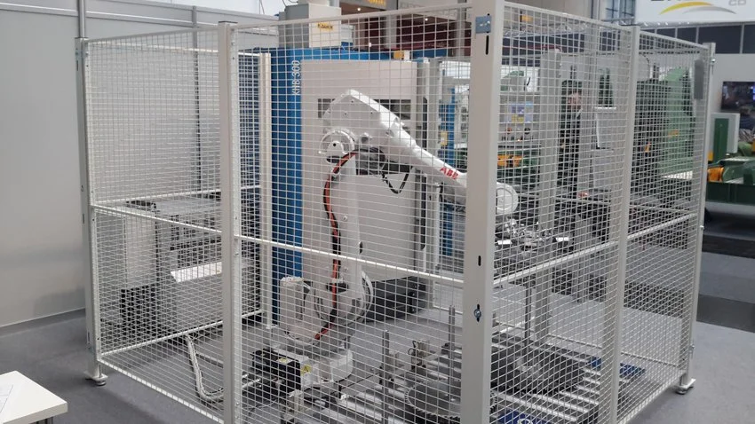
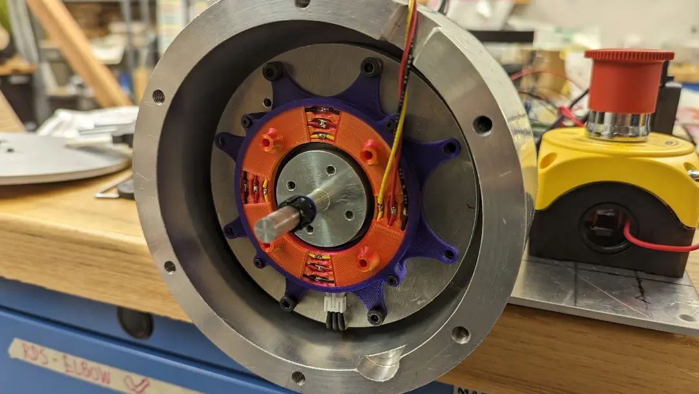
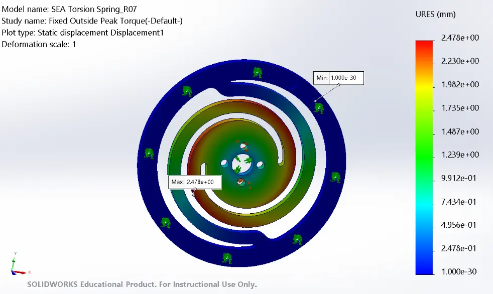
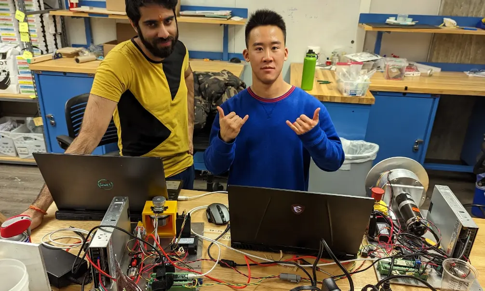
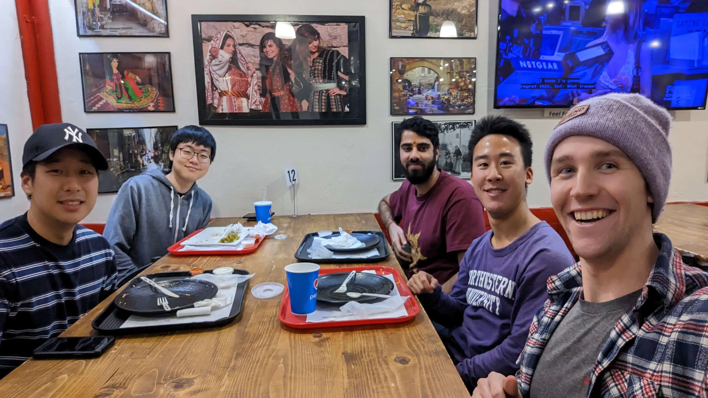

Series Elastic Actuator Joint
Backdrivable Joint For Safer Human-Robot Interaction
Problem:
Current commercial robots are able to exert an immense amount of force with the large motors and transmission boxes in their joints, but this has the unintended consequence of making robotic manipulators dangerous for the people around them. Industrial robots on factory lines have to operate in cages since the torque they generate can seriously injure humans, which drastically limits their applications.
Solution:
My team and I built a teleoperated robot joint with backdrivability as a part of Northwestern University’s Robotics Design Studio I (MECH_ENG 472-1) course to address this bottleneck in developing collaborative robots (cobots). Our device consists of a large transmission motor with a high gear ratio and a smaller haptic motor with no gearbox. By adding a spring element to the shaft of the transmission motor, we were able to measure the amount of torque it exerts on the environment and adjust the velocity of the transmission motor accordingly. As the user turns the haptic motor shaft, the large transmission motor will follow its position. However, if the transmission motor runs into an obstacle (such as a human hand), it will become compliant and turn in the direction of the torque instead of bulldozing through the hand. This concept makes it safer for humans to interact with powerful actuators and opens up doors for building more dexterous robots capable of handling delicate materials.As one can see, the transmission wheel (left) closely follows the position of the haptic motor knob (right), but it remains compliant to a human tugging on it (the large reflected inertia from its 47:1 transmission ratio makes it extremely hard to turn by default).
Series Elastic Actuator
We turned our transmission motor into a series elastic actuator (SEA) by installing a custom torsional spring we waterjetted out of 4140 alloy steel. The geometry of the spring have a spring constant of roughly 348 Nm/rad in simulation, which gives us a reasonably small deflection (~0.03 rad) upon impact. A hall effect sensor along with a small magnet is used as a highly accurate yet low-cost (<$3) method of translating this deflection into a torque reading. The hall sensor is mounted on a 3D-printed slip ring to prevent wires from coiling during operation (see below).
 

Admittance Control
Admittance control maps an input force to a corresponding motion, which allows a robot to follow an external force and improves backdrivability. In our system, we measure the torque exerted on the SEA and combine it with the torque necessary to track the position of the haptic knob in order to compute the desired velocity for our transmission motor. The RoboteQ motor controller we used then performs its own velocity control loop to produce the actual motor speed.
Mechanical Assembly
The transmission and haptic motors are mounted on different mounting plates along with their own RoboteQ controller, MCU (Arduino Teensy), and power supply. Because the transmission motor can produce a potentially dangerous amount of force, there is also an emergency stop switch next to it. Both motors have custom mounting brackets machined out of aluminum and steel, which ensure that they are secure even when the motors are operating. The only connection between the two motor plates is a cable for serial communication between the two MCUs.

My Role:

Credit:
This project was made possible by my wonderful teammates Chris Uustal, Yoon Kim, Sparsh Gautam, and Daniel Park.